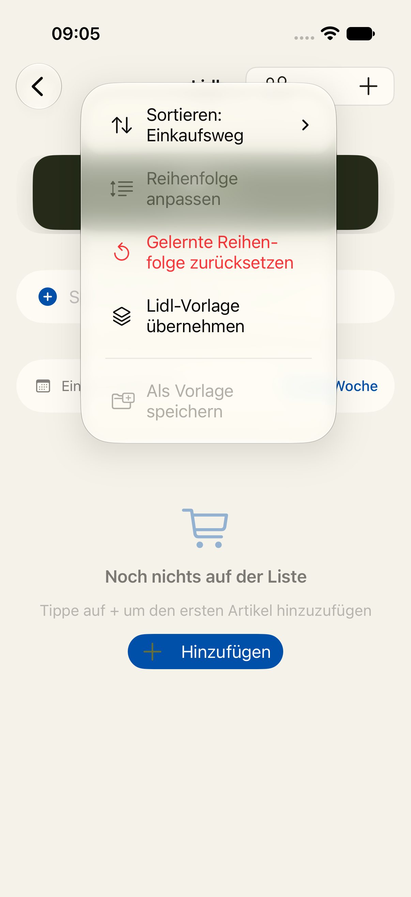

Bisher bekommt ein Laden seine Gänge nur über die Lidl-Vorlage. Jetzt richtest du sie selbst ein: Gänge anlegen, umbenennen, verschieben, löschen. Du legst fest, welche Standard-Kategorien in welchen Gang gehören und welche du ganz ausblendest. Alles liegt hinter einem einzigen Menüeintrag, „Kategorien einrichten“.
Im ···-Menü der Liste gibt es nur „Lidl-Vorlage übernehmen“ und, wenn Gänge da sind, „Gänge entfernen“. Ändern lässt sich an den Gängen nichts.

„Lidl-Vorlage übernehmen“ und „Gänge entfernen“ verschwinden aus dem Menü. An ihre Stelle tritt „Kategorien einrichten“. Den Eintrag gibt es in jedem Laden, auch ohne Gänge.
Oben stehen die Gänge in Laufreihenfolge. Ziehen am Griff ändert die Reihenfolge, Wischen löscht einen Gang. Jede Standard-Kategorie hat genau einen von drei Zuständen: in einem Gang, offen oder ausgeblendet. Offene Kategorien landen in der Liste unter „Sonstiges“. Ausgeblendete erscheinen auch nicht in der Auswahl. Ein Tipp auf eine offene Kategorie schiebt sie in einen Gang oder blendet sie aus.
Name und Emoji lassen sich ändern. Darunter stehen alle 35 Standard-Kategorien. Ein Häkchen legt eine Kategorie in diesen Gang. Steckt sie schon in einem anderen Gang, steht dessen Name darunter, und das Häkchen holt sie herüber. Die Stichwörter (z. B. „Gouda“ → Käse) zeigt der Gang nur an. Bearbeiten kommt im zweiten Teil, siehe unten.
Ganz oben in der Übersicht steht „Vorlage wählen“. Hat der Laden schon Gänge, fragt die App vorher nach, weil die Vorlage sie ersetzt. Gemerkte Zuordnungen und eigene Kategorien bleiben erhalten. Die vier Mustervorlagen tragen den Hinweis „Vorschlag, bitte prüfen“, weil die Recherche nur das Grobe belegt. Ganz unten steht „Gänge entfernen“: Damit wird der Laden wieder einer ohne Gänge.
Statt in einen Gang hineinzugehen, siehst du alle 35 Standard-Kategorien untereinander. Rechts steht bei jeder ein Knopf mit ihrem Gang, „Offen“ oder „Ausgeblendet“. Ein Tipp öffnet die Auswahl. Name, Emoji und Reihenfolge der Gänge bearbeitest du oben in einer eigenen, kurzen Liste. Vorteil: weniger Bildschirme, alle Zustände auf einen Blick. Nachteil: Was in einem Gang steckt, siehst du nicht zusammen. Für die Stichwörter (zweiter Teil) bräuchte es den Gang-Bildschirm trotzdem.
| Teil | Inhalt | Zeilen (geschätzt) |
|---|---|---|
| 2a | Diese Ansicht: Gänge anlegen, umbenennen, verschieben, löschen; Kategorien zuordnen, offen lassen, ausblenden; Vorlage wählen (Lidl), „Gänge entfernen“; ersetzt die zwei Menüeinträge | ca. 550–650 |
| 2b | Vier Mustervorlagen (Discounter, Vollsortimenter, Drogerie, Baumarkt); Stichwörter je Gang bearbeiten; Bearbeiten und Löschen per Wischen in der Kategorie-Auswahl; eigene Kategorien von früher als Gänge übernehmen | ca. 400–450 |
Gezählt wie das Prüfwerkzeug: alle neuen Zeilen, auch Tests. Die Mustervorlagen rücken in Teil 2b. Sie sind reine Daten mit dünnem Beleg, und du willst sie ohnehin einzeln prüfen.